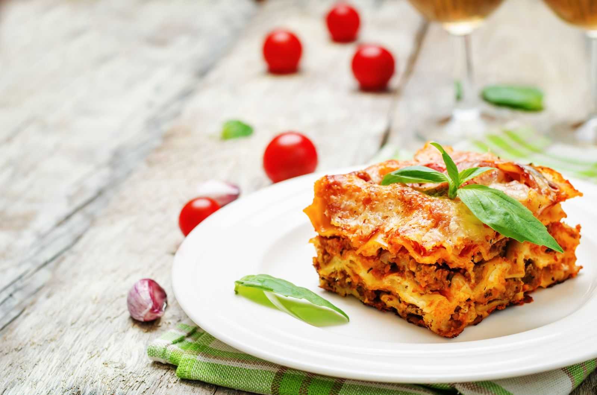

Lasagna
The tradition of lasagna originated in Emilia Romagna, and from there it has become one of the symbols of Italian cuisine throughout the world. Abroad, lasagne alla bolognese, made with béchamel and meat sauce, is well known. The Neapolitan version of this recipe includes among its ingredients tomato sauce, mozzarella, meatballs and Roman ricotta cheese. In Liguria, pesto is used as a sauce, while in Venice the sauce is replaced with red radicchio. The lasagna you eat depends on where you are.
Ingredients list
- Meat
- Onions
- Canned tomatoes
- Parsley
- Garlic
- Spices
- Cheese
- Noodles
Instructions
- Cook the ground meat in a skillet until browned and crumbly. Add the onion and continue cooking until it's translucent. Stir in the canned tomato products, parsley garlic, basil, salt and oregano.
- Boils the lasagna noodles in lightly salted water until they're al dente.
- Mix cottage cheese, parmesan cheese, the remaining parsley, the remaining salt, and pepper in a bowl.
- Layer the ingredients accoreding to the recipe until the lasagna is assembled.
- Cover with foil and bake in the preheated oven for about half an hour. Remove the foil and continue baking until the top is golden brown.